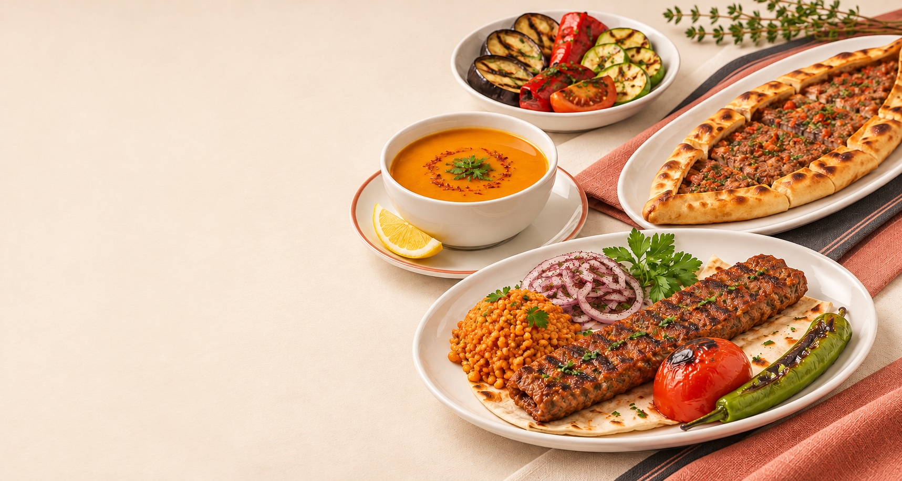

Kebap · Pide · Izgara
Gramaj ve besin bilgileri
İçeriğini bil,
afiyetle seç
MENÜ · GRAMAJ · BESİN
⌕

MENÜDEN SEÇMELER
Lezzetini keşfet
İçerik ve besin notlarını incele.
⌕
Bu aramayla eşleşen yemek yok
Başka bir yemek ya da içerik adı deneyin.
Aramayı temizle